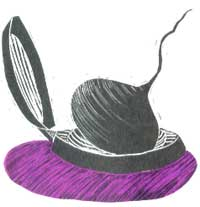
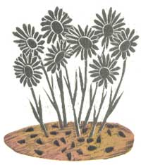
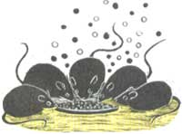
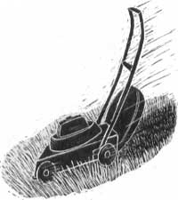

For buggy days and sultry nights, readers have the answers.
I cut down on weeding chores by buying sunflower seeds and sprinkling them in the weedy, grassy areas of my perennial flower beds. Squirrels and birds love this treat, and all those paws and claws scratching through the soil discourage weeds and grass from sprouting. The hulls left behind act as an enriching mulch, too. This works on perennial vegetable beds as well.
-Mrs. H. Henselin
Chatfield, Minnesota
Most prescription drugs and some vitamins are packaged in bottles that each contain a crystal-filled capsule that absorbs moisture and keeps the pills fresh. Once a bottle's contents are used up, the capsule can be placed in a salt or pepper shaker to keep the seasonings dry in damp weather.
-Portia Crider
Jackson, South Carolina
How I used to hate preparing beets for freezer storage! Before the job was over I'd be covered with beet juice and so would my cutting board and countertops. Last year, though, I tried two utensils meant for other uses and they worked perfectly. Once the beets were cooked and tender, I cut the larger ones into strips with my wire French-fry cutter and made nice even slices of the smaller ones with my metal egg slicer. It's an easy way to make short work of a messy job.
-Bonnie Gelle
Grand Rapids, Minnesota
An old country formula to ward off gnats and mosquitoes is to mix a tablespoon of vanilla extract into a cup of water. I rubbed this on my children's faces, even as babies, and it worked so well I tried the solution on my horse. Applied around her ears and eyes, it kept flies away.
-Joan Chevalier
McEwan, Tennessee
Pin a fabric softener sheet to the back of your collar or on your hat. It looks funny, but it sure keeps mosquitoes away.
-Tim Wacker
Alliance, Nebraska
For bug bites or for ticks, reach for a deodorant spray containing aluminum chloro-hydrate. Sprayed on a bite, it will take away the pain and swelling (not the itch, however, but you can't have everything!). If a tick has taken up residence in your skin, give the insect a squirt and in a moment or two it will crawl out where you can pick it off.
-Harriett Boggs
Fordland, Missouri
When I lived in the Ozark Mountains I was plagued by ticks. I could hardly leave the house without two or three of them attaching themselves to me. A local old-timer suggested I drink a quart of buttermilk every day. He claimed it would change the chemical composition of my perspiration so as to repel ticks. I'm not sure if this is true, but after trying his remedy, I never had another tick bite.
-R. Hersted
Portola, California
Pass the Zuckles
Like most gardeners, I always end up with too many zucchini. So I substitute the squash for cucumbers in my favorite recipes for relish and bread-and-butter pickles. No one ever can tell the difference.
-Donna N. Swanson
Portsmouth, Virginia
I guess the threat of stinging hornets is the price we pay for all the pleasures of summer. But I've learned a way to cope-with the sting, at least. If I get stung, I immediately wring out a towel in hot water and sprinkle a generous portion of meat tenderizer on the towel. This I apply directly to the sting, retreating the towel every five minutes for about half an hour. The hot towel causes the pores of my skin to open, and the tenderizer neutralizes the venom. If I do this quickly enough after the hornet's attack, there is no pain and no swelling.
-Guy DeVault
Fort Collins, Colorado
Our farm was invaded by rats and mice, and we were at our wits' end after trying to eradicate them with no success. An elderly neighbor suggested setting out shallow pans of nondiet cola. Sure enough, the rodents loved the sugary liquid, drank it greedily and within a few days were dead. They evidently can't burp, so the carbonation bloats their bodies and kills them. It's an inexpensive solution, and safe to use around pets and farm animals.
-Ruth Riley
Seattle, Washington
Lightly coat the underside of your power lawn mower with a no-stick cooking spray. Less grass adhering to the mower will make for an easier job.
-D. Gallagher
Apple Creek, Ohio
Some summer nights are so sultry even the sheets stick to your body. Try sprinkling baby powder between your sheets; you'll find you rest more comfortably. To cut costs, use a generic brand of powder and mix it half-and-half with cornstarch.
-Don Busby
Bulverde, Texas
My French-Canadian grandmother-in-law had a trick for removing the bitter taste from cucumbers. She'd cut off a one-and-a-half-inch section from one end and rub it rapidly and firmly back and forth over the cut end of the longer portion. The suction draws out a white substance, which you then wash off the main piece, discarding the cut tip.
-Sheri Perkins
Anoka, Minnesota
Through the years we've all discovered a few practical, time-tested solutions to the frustrating little problems of everyday life. Send your own suggestions to Country Lore, Mother Earth News, P.O. Box 70, Hendersonville, NC 28793. A one-year subscription-or extension of an existing subscription-will be sent to each contributor whose tip is printed. Please include your mailing label with your submission if you are a current subscriber.
|
 |
 |
 |
|
 |
|
|